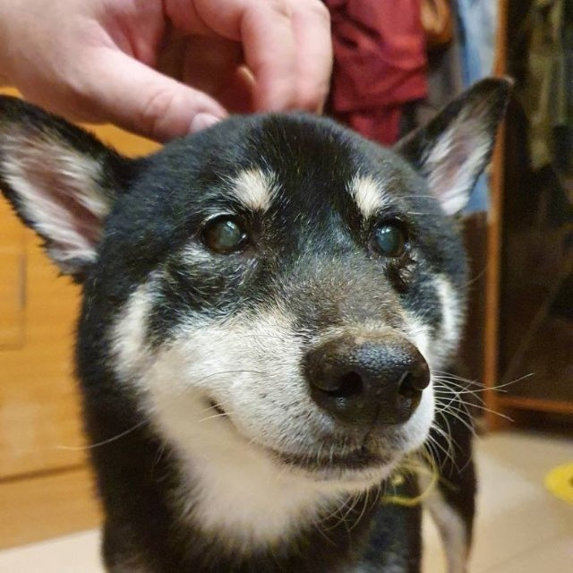

關於黑柴珠寶
因為我想紀念一隻曾經陪伴我很久的黑柴—狼狼。 牠離開後去了彩虹島，而「黑柴」這個名字，也成為我延續牠陪伴的一種方式。

牠去了彩虹島，名字留了下來
後來，我把這個名字帶進不同的領域。在區塊鏈世界裡，我曾以 BlackShibaWolf 的身份受到關注， 並登上《富比世》雜誌。那是一段跨界探索的旅程，也讓我更相信： 一個名字，可以承載記憶，也可以長出新的生命。
我與蛋白石的相遇，來自《澳洲蛋白石獵人》。 第一次看到 Yowah Nuts 被切開，裡面竟然藏著閃爍色彩的蛋白石時， 我被那種未知與驚喜深深吸引。外表看似普通的石頭，打開之後卻像封存了宇宙— 這種反差讓我著迷。
接觸蛋白石的一年內，我親手打磨了三百多顆澳洲蛋白石， 也考取了澳洲寶石學會（GAA）的蛋白石研究證書認證。 從收藏、研究到親手研磨，我慢慢理解蛋白石不只是寶石， 而是一段來自大地、時間與光的故事。
蛋白石研究證書認證
澳洲蛋白石數量
一線 dealer 直接收石
「黑柴珠寶｜澳洲蛋白石的鍊金術士」是我給自己的暱稱。
我喜歡把一顆看似粗糙的原石，透過切割、研磨與拋光，慢慢喚醒它原本藏在深處的火彩。 每一顆蛋白石都有自己的個性，有些像銀河，有些像海，有些像閃電， 也有些安靜得像一段回憶。
釋放被囚禁的銀河。」
黑柴珠寶想做的，不只是販售蛋白石， 而是分享每一顆石頭被發現、被理解、被釋放光芒的過程。
- 每件商品標示產地、類型（Solid／Boulder／Matrix）與完整規格，天然未處理
- 附自然光游彩影片，也歡迎透過 LINE 索取更多角度
- 超過一萬元的商品可協助送鑑定（鑑定費另計）
- 超過一萬元的商品可約公共場合面交，當面確認再成交
- 一物一件、售出不補——所以我寧可你買得慢，也要買得明白
這是我和黑柴狼狼一起延續下來的名字。
也是我與澳洲蛋白石相遇後，開始的一場鍊金旅程。